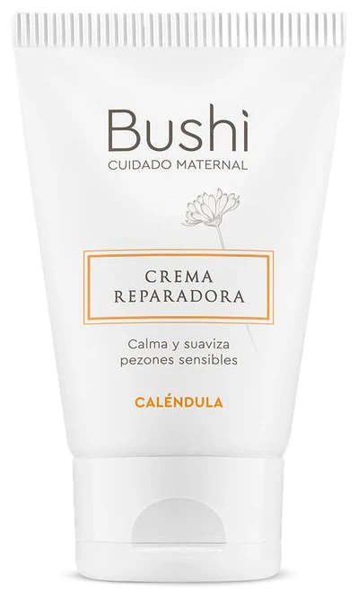
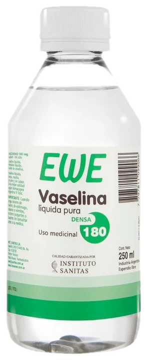
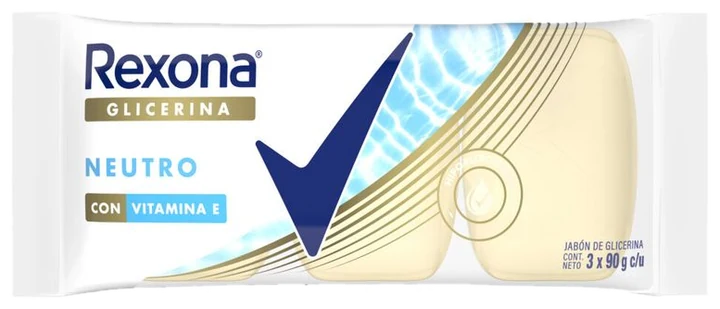
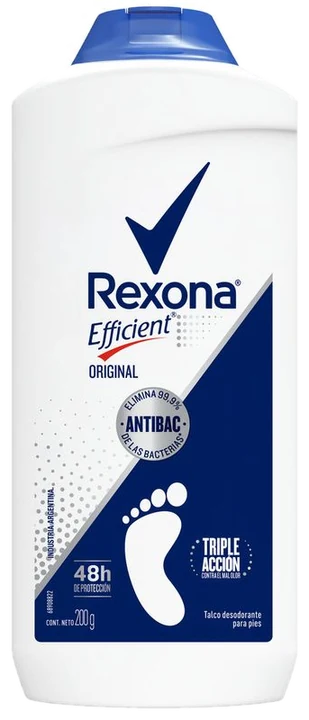

La Gaceta · Página 2Recoleta, desde 1962
Farmacia del Centro
Abrí la cajonera
Los clásicos de botica, cada uno en su cajón, como los guardamos desde 1962.
- N.º 01

Agua de rosasVeganis · 120 ml
- El más pedidoN.º 02

Crema de caléndulaBushi · 50 g
- N.º 03

Vaselina sólidaEwe · 60 g
- N.º 04

Vaselina líquidaEwe · 250 ml
- N.º 05

Jabón de glicerinaRexona · x3
- N.º 06

TalcoRexona Efficient · 200 g